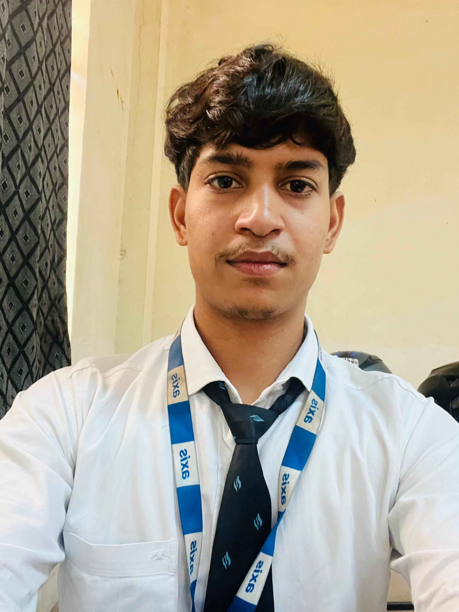

Hi, I’m Satyam Chaurasiya!
I’m a frontend developer from Kanpur, passionate about becoming a full-stack engineer. I specialize in crafting beautiful, functional, and responsive websites. With a keen eye for detail and a problem-solving mindset, I love transforming ideas into interactive digital experiences.

My Mission
I aim to build websites and applications that not only look great but also deliver seamless user experiences. By combining creativity with technical skills, I help businesses and individuals establish a strong online presence.
What I Do
I specialize in:
Frontend development (HTML, CSS, JavaScript)
Custom designs with Tailwind CSS
Responsive and accessible web solutions
Performance optimization for faster websites
Let’s Connect
Interested in collaborating or just want to say hi? Contact me here. Let’s build something amazing together!
home